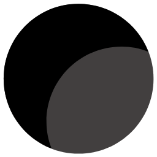

عن المركز
نبذة عنا
مرحبا بكم في مركز التميز البحثي في علوم الجينوم الطبي بجامعة الملك عبد العزيز. يقـع المركز في قــلب مدينة جــدة في حرم الجامعة الطبية الرئيسية، بمركز الملك فهد للبحوث الطبية. مع ندرة مراكز البحوث الجينية في المملكة العربية السعودية، وبالحاجة إلى الشروع في تطوير مناهج بحثية متقدمة لتحقــيق أقصى قدر من التقدم في ترسيخ قـواعد بحثية لدى الأجيال السعودية، يتقدم مفهوم مركز التميز لبحوث الجينوم خطوة إلى الأمام، ليتم الموافقة عليه من قبل وزارة التعليم العالي.
كلمة مدير المركز
مرحبا بكم في مركز التميز البحثي في علوم الجينوم الطبي بجامعة الملك عبد العزيز. يقـع المركز في قــلب مدينة جــدة في حرم الجامعة الطبية الرئيسية، بمركز الملك فهد للبحوث الطبية. مع ندرة مراكز البحوث الجينية في المملكة العربية السعودية، وبالحاجة إلى الشروع في تطوير مناهج بحثية متقدمة لتحقــيق أقصى قدر من التقدم في ترسيخ قـواعد بحثية لدى الأجيال السعودية، يتقدم مفهوم مركز التميز لبحوث الجينوم خطوة إلى الأمام، ليتم الموافقة عليه من قبل وزارة التعليم العالي.
يتمثل الهدف العام للمركز في إجراء البحوث الأساسية، والتطبيقية، المطابقة للمعايير الدولية لمكافحـة الأمراض الوراثية والسرطانية الشائعة في المملكة العربية السعودية. لذا يهدف المركز إلى معالجة القـــضايا الصحــية الهامة على المسـتوي الجيني، البروتيني، وفوق الجيني. وقام المركز مؤخراً بالبدء في برنامج بحثي مهم في مجال علم الصيدلة الجيني، واكتشـاف الأدوية، لدراســة ثأثير التغيرات الجينية على فاعلية الأدوية المضادة للسرطان في سكان الممكلة العربية السعودية، وأيضاَ لإكتشاف أدوية جديدة مضادة للسرطان و للجراثيم لتوفير احــتياجات جديدة غير مسبوقة.
المركز يدعم العلوم الجينية الصميمية، بتسهيل التفاعل بين الباحثين من مختلف التخصصات العلمية، وذلك بالاعتماد على فرق عمل منتجة ومتعاونة في تهيئة بيئة عملية مواتية. البرامج والخطط البحثية لمركز الجينوم الطبي هي في الحقيقة برامج موحدة ومبسطة، بيد أنها ذات طيف واسـع، ونظرة شاملة، لمعالجة المشاكل الصحية الهامة على الصعيد الوطني، باسـتخدام أنظمة الجينوم، وعلوم الوراثة التنموية والتطويرية، وكذلك العلوم البيولوجية الجزيئية. نحن نسعى جاهدين لتطوير وسائل تكنولوجية حاسوبية جديدة، لإنتاج وتحليل البيانات الشاملة، باستخدام طرق أخرى معتمدة على المسارات الجينية المتطورة، لفهم الأنظمة البيولوجية للأمراض الوراثية والسرطانية. وبصرف النظر عن توفير ودعم البحوث الحيوية المبتكرة، يعزز مركز الجينوم البيئة التعليمية في المملكة العربية السعودية، لذا نحن ملتزمون بــتدريب الطلبــة والطالبات ، وتزويدهم بالمهارات والمعارف اللازمة لضمان نجاحهم في أسواق البحث العالمية، وذلك من خلال التعاون المحلي والدولي، والشراكة مع الروابط الأكاديمية، والمتخصصين، والباحثين، وراسمي السياسات العامة. لهذا يشجع المركــز على ترسيخ البحوث المستدامة، وتغيير النمط التعليمي في المملكة، ســعيا نحو تحســين النجاح الأكاديمي، فضلا عن تعزيز التقدم الاقتصادي. في الحقيقة الآفاق المستقبلية للمركز واعدة جداً، فنحن نقيم علاقات تعاون مع مراكز بحوث طبية محليا وعالميا، وعليه فهذه أوقــات مهمة بالنسبة للجمعيات والأوساط العلمية، لذا فنحن نرحب بمشـــاركة جميع الأطراف المعنية في مســــاعينا. فمن خلال الالتزام والتفاني في البحث العلمي، نسعى إلى أن نكــون بيت خبرة في المملكة العربية السعودية في مجال أبحاث الجينوم الطبية.
أ.د. محمد حسين القحطاني مدير مركز التميز البحثي في علوم الجينوم الطبية
رقم قرار وتاريخ إنشاء المركز
رقم قرار: ق/2629
تاريخ إنشاء المركز: 23/ 2/ 1428هـ
الإنجازات
الأهداف
 أن نكون روادا وقادة في مجال البحوث الطبية الحيوية من خلال دعم التعليم الاساسي، والبحوث المتقدمة، وذلك باعتماد سياسة التعاون والشراكة في المملكة العربية السعودية .
المساهمة الرئيسة في دعم ثقافة البحث العلمي بجامعة الملك عبد العزيز.
تطوير القدرات المادية، والمالية، والتشغيلية، والتنظيمية للحفاظ على التميز الأكاديمي.
تعزيز إدراك الأطباء لأهمية البحث العلمي من أجل دعم الممارسة الطبية المبنية على الأدلة العلمية في المملكة.
إنشاء شراكة محلية ودولية من أجل رفعة البحث العلمي.
أن نصبح بيت خبرة في مجال البحث العلمي، وذلك من خلال الالتزام والتفاني في البحوث العلمية الأصيلة، باستخدام التقنيات الحديثة المتطورة.
تقديم الدعم الفني والفكري للباحثين في المجالات الطبية و الحيوية بجامعة الملك عبد العزيز وغيرها من الجامعات.
اعتماد البحث العلمي في دعم طرق التدريس.
تسهيل وضع البرامج التوعية للناس، بما في ذلك التعليم العام.
إجراء بحوث طبية متعددة التخصصات ذات نطاق يمتد من إيجاد أدوات لتحليل بيانات الجينوم، والبروتين، وفوق الجينوم، إلى البحث عن الطفرات الوراثية للأمراض لفهم تطورها، باعتماد تحليل التعابير و المسارات الوراثية الجزيئية.